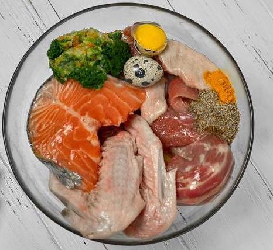
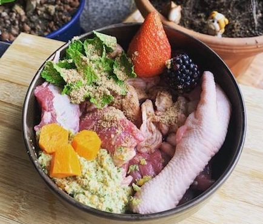
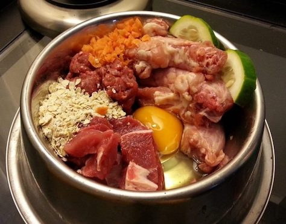
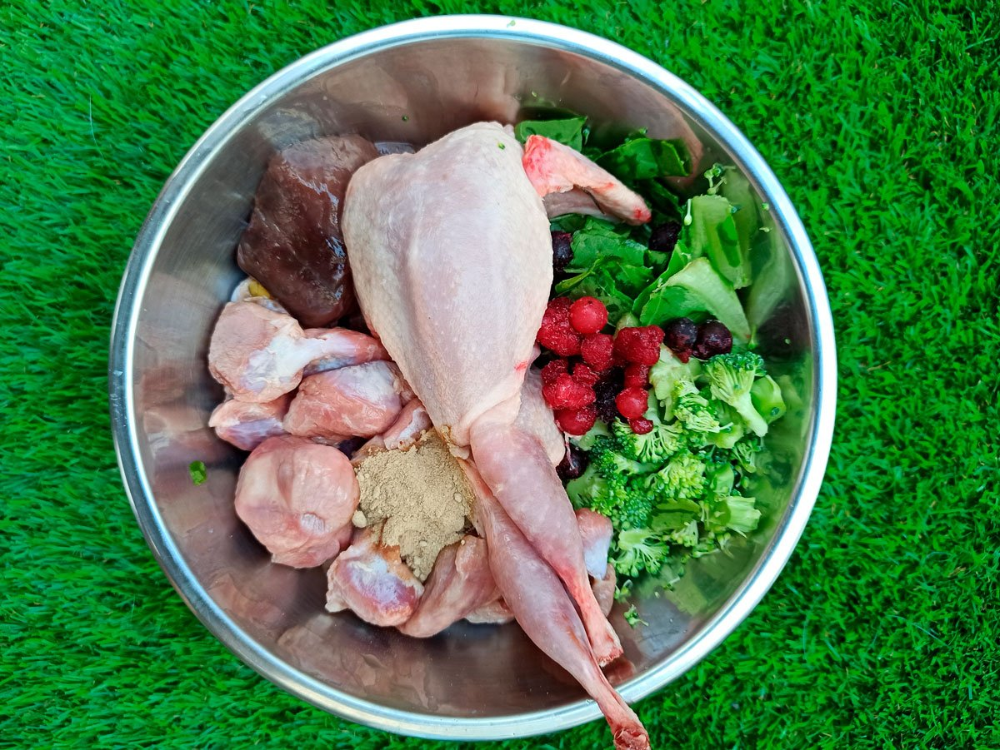
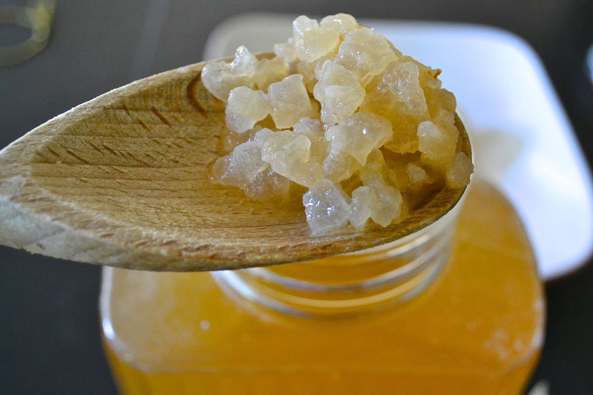
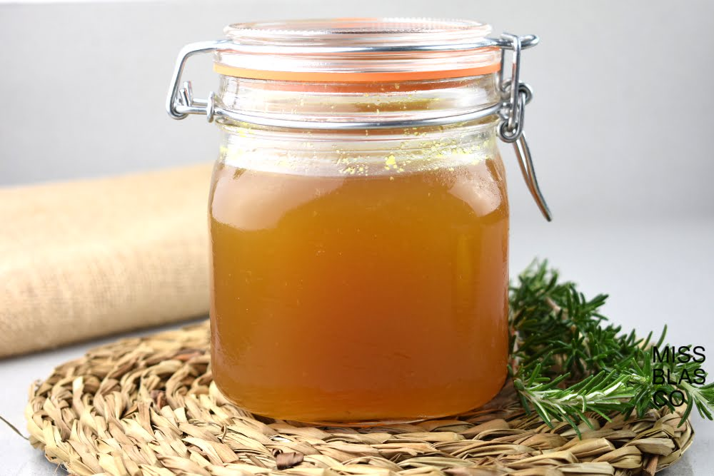
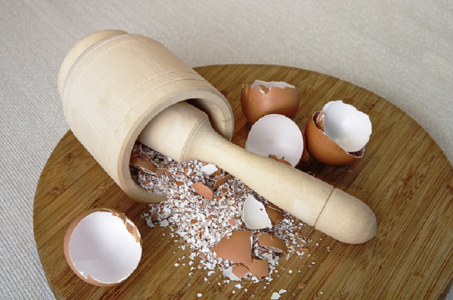
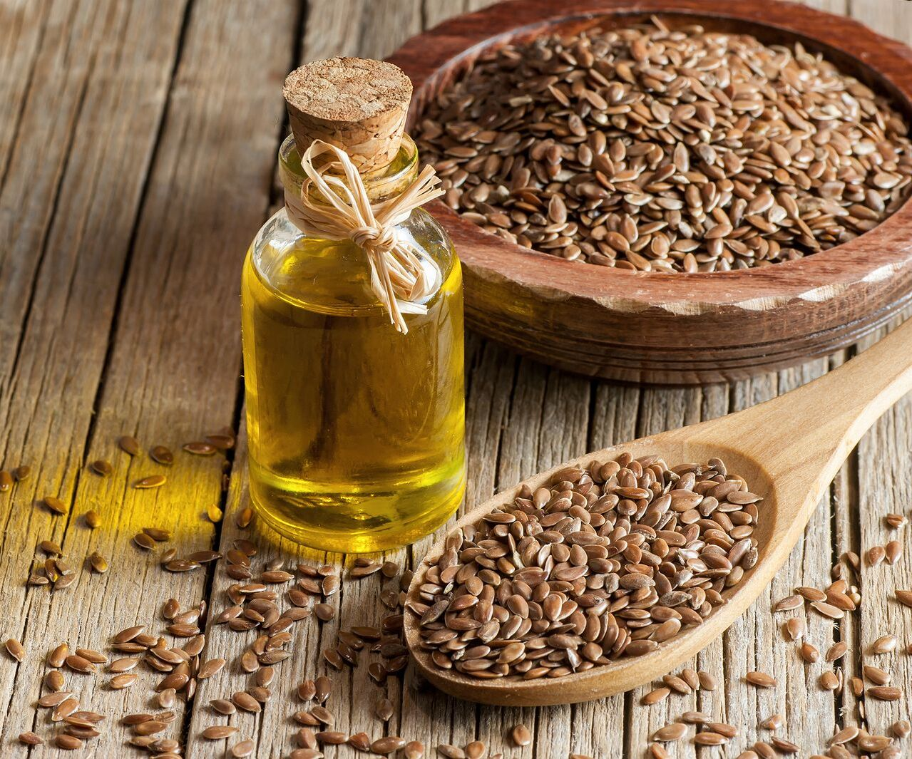

Recetas
Las recetas que se proporcionan aquí varían desde comidas balanceadas hasta opciones de alimentación suplementaria. Cada receta equilibrada utiliza carne, huesos y órganos crudos.
Las recetas de suplementos se crean para agregarlas a las dietas crudas existentes y no deben administrarse como una comida independiente.
Opciones de Menú

Menú de pato

Menú de ternera

Menú de pollo
Suplementos y complementos

Kefir de agua

Caldo de huesos

Calcio en polvo
